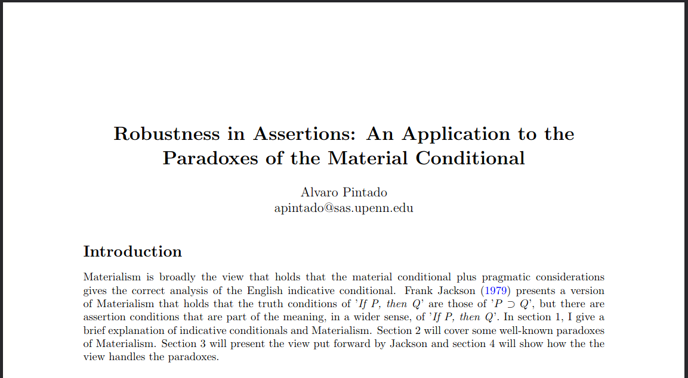

Applying Assertion Conditions to Paradoxes of the Material Conditional
I'm in the process of rewriting this essay. I might use it as writing sample for PhD applications to philosophy programs. I've attached a screenshot of the introduction below.
